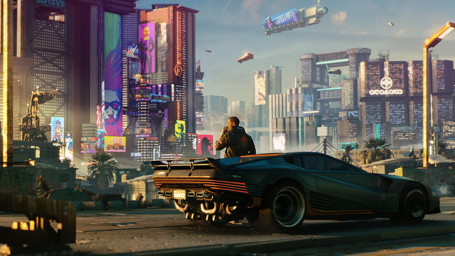
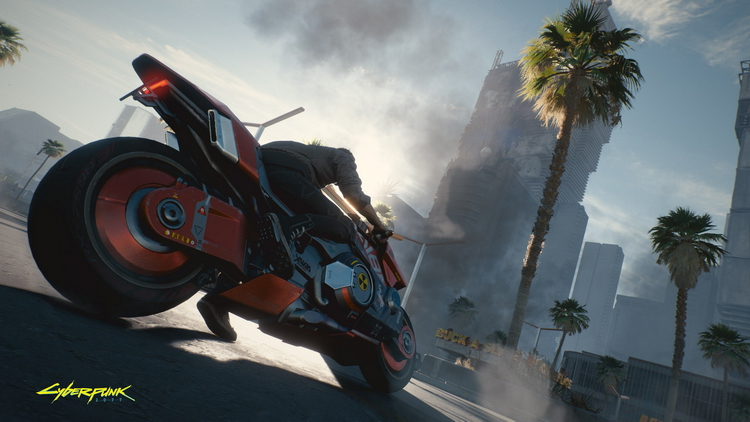
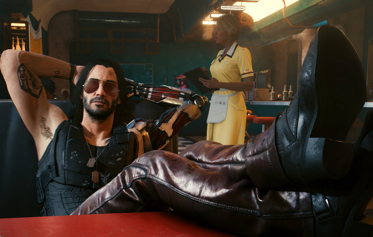

Компанія CD Projekt і студія CD Projekt RED оголосили про випуск патча 1.1 для рольового шутера Cyberpunk 2077 на ПК, консолях і хмарного сервісу Google Stadia. В оновленні розробники зосередилися на виправленнях і підвищенні стабільності гри.
CD Projekt RED удосконалила алгоритм, за яким пам'ять використовувалася системами персонажів, взаємодії зі світом і навігації, а також внутрішньоігровими відеороликами та іншими елементами проєкту. Разом із цим було виправлено помилки, які спричиняли аварійне завершення гри.
З боку інтерфейсу було виправлено помилку, через яку не з'являлася підказка про вихід із брейндансу. Також було прибрано значки здобичі на предметах, які не можна взяти. Крім того, студія виправила чутливий баг, через який при натисканні кнопки "Продовжити" в головному меню завантажувався файл збереження, створений після завершення гри.
На PlayStation 4 Pro і PlayStation 5 з патчем було оптимізовано продуктивність під час обробки скупчень людей, а на PlayStation 4 розробник виправив цілу низку помилок, яка спричиняла аварійне завершення гри. На консолях Xbox One (зокрема Xbox One X і Xbox One S) команда вдосконалила алгоритм використання пам'яті під час створення персонажа, використання дзеркал, сканування, віддаленого управління камерою, навігації по карті та в меню спорядження.
Нарешті, CD Projekt RED виправила безліч помилок у завданнях, зокрема "Реінтеграція", "Загублений рай", "Відповісти на дзвінок від містера Хендса", "Відпусти мене, глибина", "Третя зустріч зі стихіями", "Старі друзі", "Скидання в Мальстрем", "Королева автострад: Великі перегони", "Хто не з нами", "Дари космосу", "Ляльковий будиночок" і "Вільна преса".